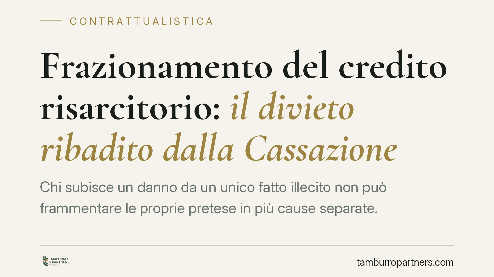

Frazionamento del credito risarcitorio: il divieto ribadito dalla Cassazione
Chi subisce un danno da un unico fatto illecito non può frammentare le proprie pretese in più cause separate. Una recente pronuncia della Corte di Cassazione ribadisce che tutte le voci di danno conoscibili al momento della prima azione vanno fatte valere insieme. Chi le dilaziona rischia di vedersi precludere il residuo del credito. Un principio con ricadute concrete su strategia processuale e difesa.

Il principio riaffermato
La Corte di Cassazione è tornata sul divieto di frazionamento del credito risarcitorio derivante da un unico fatto illecito. La regola è nota: chi agisce per il risarcimento deve far valere in un solo giudizio tutte le pretese percepibili al momento della prima domanda. Non è consentito instaurare più cause separate per ottenere, di volta in volta, singole voci di danno riconducibili allo stesso evento.
Il caso trae origine da un rapporto di lavoro: l'erede di un lavoratore deceduto agisce nei confronti dell'azienda datrice. La Corte ha ricordato che la parcellizzazione della pretesa, quando le diverse voci erano già conoscibili all'atto della prima azione, non merita tutela.
Inquadramento normativo
Il fondamento della responsabilità è l'art. 2043 c.c., che obbliga al risarcimento chi cagiona ad altri un danno ingiusto. L'estensione del danno risarcibile è definita dall'art. 1223 c.c.: comprende sia la perdita subita (danno emergente) sia il mancato guadagno (lucro cessante), purché conseguenza immediata e diretta dell'illecito.
Il divieto di frazionamento si regge poi sul principio processuale del "dedotto e deducibile". La cosa giudicata, disciplinata dall'art. 2909 c.c. e, quanto alla formazione del giudicato, dall'art. 324 c.p.c., copre non solo ciò che è stato effettivamente dedotto in giudizio, ma anche ciò che avrebbe potuto e dovuto essere dedotto. In termini pratici: una volta chiuso il processo su un fatto, non si può tornare a chiedere ciò che era già proponibile allora.
Il leading case in materia resta Cass. Sezioni Unite n. 23726/2007, che ha sancito l'inammissibilità della domanda frazionata di un credito unitario. La successiva Cass. Sezioni Unite n. 4090/2017 ha precisato i limiti di ammissibilità delle domande relative a crediti distinti nascenti dal medesimo rapporto, richiedendo comunque un interesse oggettivamente valutabile a procedere separatamente.
A monte c'è un valore di sistema: i doveri di buona fede e correttezza (artt. 1175 e 1375 c.c.). Frazionare artificiosamente una pretesa unitaria costituisce abuso del processo, perché moltiplica i giudizi, aggrava la posizione del debitore ed espone la controparte a un contenzioso seriale ingiustificato.
Implicazioni pratiche
La lettura cambia a seconda della prospettiva.
Per il creditore — qui, il lavoratore o il suo erede — l'insegnamento è netto: la prima azione deve essere completa. Chi si limita a domandare una parte del danno, riservandosi il resto per un secondo giudizio, rischia che quel residuo sia dichiarato inammissibile o resti travolto dal giudicato formatosi sulla prima causa. L'errore di impostazione iniziale può risultare irreversibile.
Per il datore di lavoro e, più in generale, per la parte convenuta, il principio è un'arma difensiva concreta. Di fronte a una seconda causa che riguarda voci già proponibili nella prima, è possibile eccepire il giudicato e il divieto di frazionamento, chiedendo la declaratoria di inammissibilità della domanda successiva.
Esiste una sola finestra rilevante: i danni sopravvenuti e imprevedibili, non conoscibili al momento della prima azione. Solo questi possono essere fatti valere in un giudizio autonomo. Ma l'onere di dimostrare l'imprevedibilità e la successiva emersione del danno grava su chi agisce. Non basta affermarlo: va provato.
Cosa fare in concreto
- Quantificare l'intero danno prima di agire. Prima del deposito, ricostruire tutte le voci risarcibili collegate all'unico fatto: danno emergente, lucro cessante, voci patrimoniali e non patrimoniali.
- Includere tutte le pretese conoscibili nella prima domanda. Evitare depositi parziali: ciò che è proponibile subito va proposto subito.
- Documentare l'imprevedibilità di eventuali danni futuri. Se una voce potrebbe emergere solo in seguito, conservare gli elementi che ne dimostrino la non conoscibilità attuale.
- Verificare, in difesa, la sovrapposizione con giudicati precedenti. Chi è convenuto in una seconda causa deve controllare se le pretese erano già deducibili nel primo giudizio ed eccepire il giudicato.
- Pianificare la strategia processuale sin dall'inizio, evitando depositi parziali che possono precludere l'intero credito.
Disclaimer
Contributo informativo a cura di Tamburro & Partners Avvocati - Avv. Giuseppe Tamburro. Non costituisce parere legale.
Ogni contratto ha il suo equilibrio.
Se vuoi una revisione delle clausole o una redazione su misura, scrivi allo studio. Ti rispondiamo entro un giorno lavorativo.